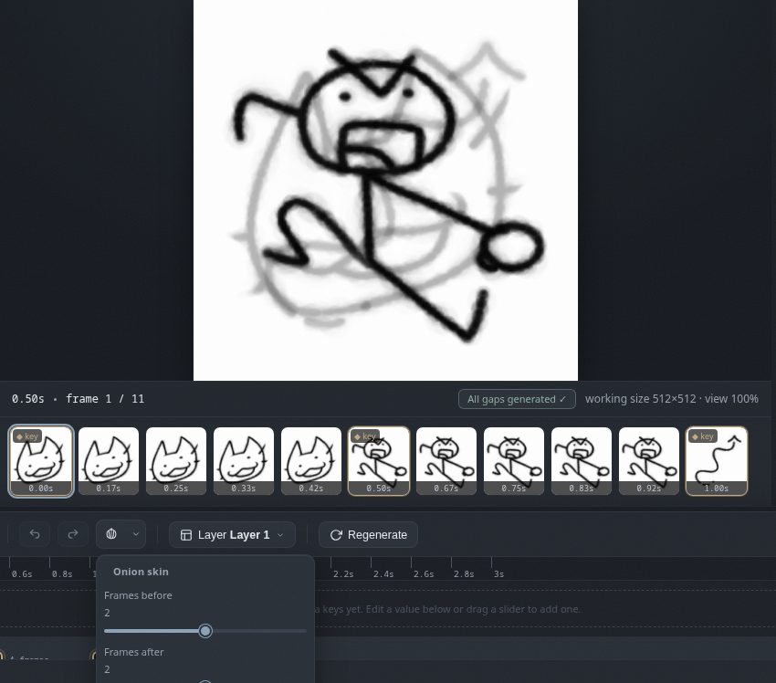

Onion skinning
Ghosts of the frames around the current one, and how to configure them.
What it is
Onion skinning shows the frames around the current one, so you can see where the motion is heading while you work. Same trick as those animation desks with the light board, minus the physical onions. It is a toggle, like the view only keyframes button.

Turn it on
The onion button in the transport area toggles it on and off. The small arrow next to it opens the settings popup.
Settings
- Frames before and after choose how many neighbors to show.
- Opacity sets how strong the ghosts are.
- Tint replaces the ghost look with a flat tint; pick the color and strength.
Saved automatically
Your onion skin settings are saved in the browser, so they come back the next time you open Khuwari, even after loading a project. Configure the ghosts once and be done with it.